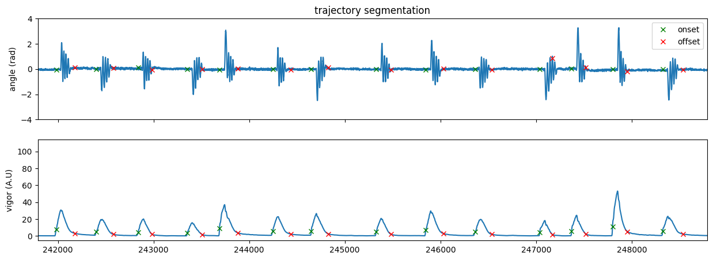
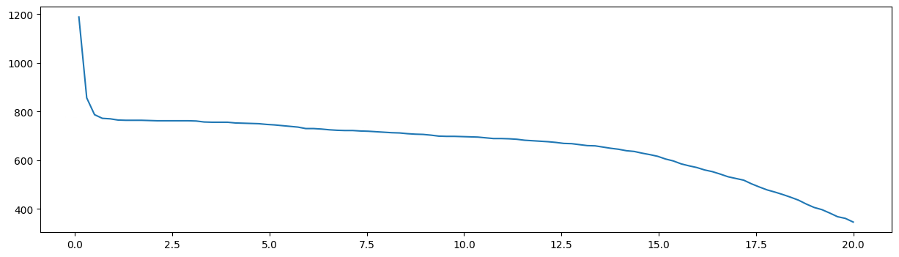

Tutorial: Traj Segmentation#
The following notebook illustrate the TrajSegmentation class.
Loading dependencies
from IPython.display import SVG, display
import os
import numpy as np
import pandas as pd
import matplotlib.pyplot as plt
from megabouts.tracking_data.tracking_data import TrackingConfig
from megabouts.tracking_data.load_example import load_example_data
from megabouts.tracking_data.tracking_data import FullTrackingData
from megabouts.preprocessing.traj_preprocessing import TrajPreprocessingConfig
from megabouts.preprocessing.traj_preprocessing import TrajPreprocessingResult
from megabouts.preprocessing.traj_preprocessing import TrajPreprocessing
from megabouts.preprocessing.tail_preprocessing import TailPreprocessingConfig
from megabouts.preprocessing.tail_preprocessing import TailPreprocessingResult
from megabouts.preprocessing.tail_preprocessing import TailPreprocessing
from megabouts.segmentation.segmentation_config import TailSegmentationConfig
from megabouts.segmentation.segmentation_config import TrajSegmentationConfig
from megabouts.segmentation.segmentation import TailSegmentation
from megabouts.segmentation.segmentation import TrajSegmentation
from megabouts.segmentation.segmentation import SegmentationFactory
from megabouts.segmentation.segmentation import SegmentationResult
Loading Data and Preprocessing#
TrackingConfig and TrackingData similar to tutorial_Tail_Preprocessing
df_recording, fps, mm_per_unit = load_example_data('fulltracking_posture')
tracking_cfg = TrackingConfig(fps=fps, tracking='full_tracking')
head_x = df_recording['head_x'].values*mm_per_unit
head_y = df_recording['head_y'].values*mm_per_unit
head_yaw = df_recording['head_angle'].values
tail_angle = df_recording.filter(like='tail_angle').values
tracking_data = FullTrackingData.from_posture(head_x = head_x,
head_y = head_y,
head_yaw = head_yaw,
tail_angle = tail_angle)
tail_preprocessing_cfg = TailPreprocessingConfig(fps=tracking_cfg.fps)
tail_preprocessing_cfg = TailPreprocessingConfig(fps=tracking_cfg.fps,
num_pcs=4,
savgol_window_ms=15,
tail_speed_filter_ms = 100,
tail_speed_boxcar_filter_ms = 14
)
tail_df_input = tracking_data.tail_df
tail = TailPreprocessing(tail_preprocessing_cfg).preprocess_tail_df(tail_df_input)
traj_preprocessing_cfg = TrajPreprocessingConfig(fps=tracking_cfg.fps)
traj_df_input = tracking_data.traj_df
traj = TrajPreprocessing(traj_preprocessing_cfg).preprocess_traj_df(traj_df_input)
Segmentation using kinematic vigor#
kinematic_vigor = traj.vigor
traj_segmentation_cfg = TrajSegmentationConfig(fps=tracking_cfg.fps,
peak_prominence=0.75,
peak_percentage=0.1
)
segmentation_function = SegmentationFactory.get_segmenter(traj_segmentation_cfg)
segments = segmentation_function.segment_from_traj(kinematic_vigor)
Show code cell source
fig,ax = plt.subplots(2,1,figsize=(15,5),sharex=True)
x = tracking_data._tail_angle[:,7]
ax[0].plot(x)
ax[0].plot(segments.onset, x[segments.onset], "x",color='green',label='onset')
ax[0].plot(segments.offset, x[segments.offset], "x",color='red',label='offset')
ax[0].set_ylim(-4,4)
ax[0].legend()
ax[0].set(title='trajectory segmentation',ylabel='angle (rad)',ylim=(-4,4))
x = kinematic_vigor
ax[1].plot(x)
ax[1].plot(segments.onset, x[segments.onset], "x",color='green')
ax[1].plot(segments.offset, x[segments.offset], "x",color='red')
ax[1].set(ylabel='vigor (A.U)')
t = np.arange(tracking_data.T)/tracking_cfg.fps
IdSt = np.random.randint(tracking_data.T)
Duration = 10*tracking_cfg.fps
ax[1].set_xlim(IdSt,IdSt+Duration)
plt.show()

# Number of bouts as function of threshold:
thresh_list = np.linspace(0.1,20,100)
num_peaks = np.zeros_like(thresh_list)
kinematic_vigor = traj.vigor
for i,thresh in enumerate(thresh_list):
traj_segmentation_cfg = TrajSegmentationConfig(fps=tracking_cfg.fps,
peak_prominence=thresh,
peak_percentage=0.1)
segmentation_function = SegmentationFactory.get_segmenter(traj_segmentation_cfg)
segments = segmentation_function.segment_from_traj(kinematic_vigor)
num_peaks[i] = len(segments.onset)
Show code cell source
plt.figure(figsize=(15,4))
plt.plot(thresh_list,num_peaks)
plt.show()
